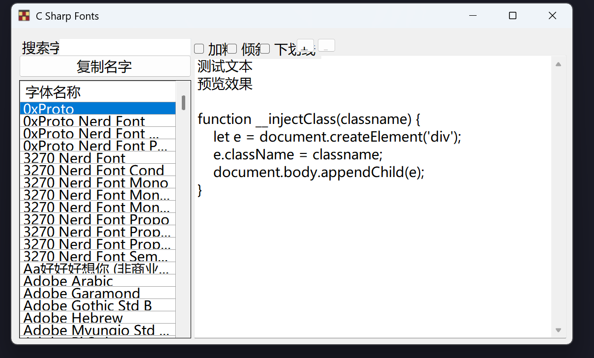

csharp winform 在高 DPI 缩放下界面错位
问题描述
当系统缩放比例大于 100% 时，WinForm 界面会出现错位。并且打开 VS 后，窗体设计器里面的窗口界面也是错位的。

解决方案
处理窗体设计器错位
按照微软文档的方法，修改项目配置文件
1 | |
然后重启 vs，重新打开窗体设计器，界面就不会错位了。
处理 DPI 问题
在 Program.cs 文件中，添加Application.SetHighDpiMode(HighDpiMode.DpiUnawareGdiScaled);
1 | |
可以看到界面不再错位了。
如果将枚举 HighDpiMode 改成 DpiUnaware，界面会有点糊。

这一步是根据网上教程，创建 app.manifest 文件，并取消 dpi 部分注释后，VS 输出界面提示警告，要使用 Application.SetHighDpiMode API 来设置 DPI 缩放。
搜索后发现微软文档中有相关说明。
这里 有 HighDpiMode 枚举值的说明。
csharp winform 在高 DPI 缩放下界面错位
https://taylorandtony.github.io/2025/10/16/csharp-winform-在高-DPI-缩放下界面错位/